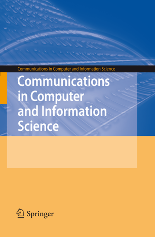

Workshops
Attending the workshops is included in the conference fee (no additional charge). The workshops will take place on 26 November either at the Aotea Centre (Hunua Rooms) or in Building WG of AUT (8th floor), which is just a short 5 minutes walk from Aotea Centre; just follow the ACPR signs.
Workshop WS1 will be at Hunua Room 3 (full day), WS2 at Hunua Room 2 (morning), and workshops WS3 to WS8 will be in rooms in the 8th floor of Building WG of AUT (room assignments to be announced closer to the conference).
WS1: Workshop on Computer Vision for Modern Vehicles
Workshop Chairs: Prof. Jinsheng Xiao, Wuhan University, China (xiaojs@whu.edu.cn)
Atsushi Imiya, Chiba University, Japan
Hsiang-Jen Chien, Auckland Transport, New Zealand
Thomas Braeunl, University of Western Australia, Australia
WS2: 3D Reconstruction and Interactive Augmented Reality (3IAR)
Website: https://3iar.github.io/
Workshop Chairs: Dr. Hossein Javidnia, Trinity College Dublin, Ireland (hossein.javidnia@tcd.ie)
Soumyabrata Dev, Trinity College Dublin, Ireland
Shabab Bazrafkan, University of Antwerp, Belgium
François Pitié, Trinity College Dublin, Ireland
Peter Corcoran, National University of Ireland Galway, Ireland
WS3: Computer Vision for Atmospheric Events Analysis (CVAE 2019)
Website: https://2019cvae.github.io/
Workshop Chairs: Dr. Soumyabrata Dev, The ADAPT Centre, Ireland (soumyabrata.dev@adaptcentre.ie)
Hossein Javidnia, The ADAPT Centre, Ireland
Prof. François Pitié, Trinity College, Ireland
Manabendra Saharia, NASA GSFC/University of Maryland, United States
Yee Hui Lee, Nanyang Technological University, Singapore
Stefan Winkler, National University of Singapore, Singapore
WS4: Advances and Applications on Generative Deep Learning Models
Website: https://marianorivera.github.io/aagm.github.io/
Workshop Chairs: Dr. Mariano Rivera, Center for Research in Mathematics AC, Mexico (mrivera@cimat.mx)
Wei Qi Yan, Auckland University of Technology, New Zealand
Wangmeng Zuo, Harbin Institute of Technology, China
Adrián Pastor Lopez-Monroy, Center for Research in Mathematics AC, Mexico
WS5: Image and Pattern Analysis for Multidisciplinary Computational Anatomy
Website: http://www.media.imit.chiba-u.jp/ipaMAC2019
Workshop Chairs: Prof. Atsushi Imiya, Chiba University, Japan (imiya@faculty.chiba-u.jp)
Harvey Ho, The University of Auckland, New Zealand
Yukiko Kenmochi, Universite Paris-Est Marne Marne-la-Vallee, France
Kensaku Mori, Nagoya Univeristy, Japan
Hidekata Hontani, Japan
WS6: Multi-Sensor for Action and Gesture Recognition
Website: https://ljxwallace.github.io/2019MAGR.github.io/
Workshop Chairs: Prof. Jianyu Yang, Soochow University, China (jyyang@suda.edu.cn)
Zhigang Tu, Wuhan University, China
JingJing Meng, State University of New York, USA
WS7: Workshop on Robot Vision
Website: https://jackybaltes.wixsite.com/acprrv2019
Workshop Chairs: Prof. Jacky Baltes, National Taiwan Normal University, Taiwan (jacky.baltes@ntnu.edu.tw)
Prof. Soroush Sadeghnejad, Amirkabir University of Technology, Iran
Prof. Rodrigo Da Silva Guerra, Universite Federale de Santa Maria, Brazil
WS8: Towards an Automatic Data Processing Chain for Airborne and Spaceborne Sensors
Workshop Chairs: Prof. Ralf Reulke, Humboldt-Universität zu Berlin, Germany (ralf.reulke@hu-berlin.de)
Prof. Bin Luo, Wuhan University, China

Workshop Proceedings
− Workshop proceedings will be published after the conference in the CCIS series of Springer through the ACPR organizers (publication chair). At the conference, workshop papers will be distributed on USB, together with the ACPR main conference proceedings. Publication in the CCIS volume requires that the paper has been presented at the ACPR workshop by one of the co-authors.